Introduction
This guide will walk you through installing and starting up JBoss Enterprise Application Platform 6. It will then introduce key features of the Java EE 6 (Web Profile) programming model, of which JBoss EAP 6 is a certified implementation.
|
|
Java EE 6
The Java EE 6 platform offers developers the ability to write distributed, transactional and portable applications quickly and easily. We class applications that require these capabilities "enterprise applications". These applications must be fast, secure and reliable. Java EE has always offered strong messaging (JMS), transactional (JTA) and resource (JCA) capabilities as well as exposing web services via SOAP (JAX-WS). Java EE 5 started a radical shift for the programming model, offering a powerful, declarative and lightweight object-relational mapper (JPA) and annotation-driven, lightweight access to enterprise services (EJB 3). Java EE 6 added a type-safe, loosely coupled programming model (CDI), declarative validation of constraints (Bean Validation) and RESTful web services (JAX-RS) to produce a complete, modern development environment. |
JBoss Enterprise Application Platform 6 departs from the familiar structure of previous JBoss EAP versions, so we recommend all developers follow the steps in Getting Started with JBoss Enterprise Application Platform 6 to install and start up the application server for the first time.
JBoss Enterprise Application Platform 6 comes with a series of quickstarts aimed to get you up to writing applications with minimal fuss. We recommend that start by working through the quickstarts in this guide, in the order they are presented. If you have previous experience with Java EE 6, you may wish to skip some or all of the quickstarts.
Core
-
Helloworld Quickstart. If you have previously developed applications using technologies such as JSF or Wicket, and EJB or Spring, you may wish to skip this quickstart.
-
Numberguess Quickstart. If you have previously developed applications using technologies such as JSF or Wicket, EJB or Spring, and JPA or Hibernate you may wish to skip this quickstart.
-
Greeter Quickstart. If you are a Java EE wizard you may wish to skip this quickstart.
-
Kitchensink Quickstart. A great starting point for your project.
Optional
-
OSGi Helloworld Quickstart. If you want to get started with OSGi, check out this quickstart.
Downloading the quickstarts
The quickstarts are are available for download from JBoss Developer Framework. Make sure you download the latest zip!
Getting started with JBoss Enterprise Application Platform 6
To run the quickstarts with the provided build scripts, you’ll need:
|
|
If you already have any of these pieces of software, there is no need to install them again! |
- Java 1.6, to run JBoss EAP and Maven
-
Choose your Java runtime, and follow their installation instructions. For example, you could choose one of:
- Maven 3, to build and deploy the quickstarts
-
Follow the official Maven installation guide if you don’t already have Maven 3 installed. You can check which version of Maven you have installed (if any) by running mvn --version . If you see a version newer than 3.0.0, you are ready to go.
Make sure you have:
- The JBoss Enterprise Application Platform 6 runtime
- The JBoss Enterprise Application Platform 6 quickstarts
If you wish to use the examples from an IDE, we recommend using JBoss Developer Studio, or Eclipse with JBoss Tools.
- JBoss Developer Studio
-
Download JBDS from http://devstudio.jboss.com/download/. JBDS includes JBoss Enterprise Application Platform.
- Eclipse, with JBoss Tools
-
Download JBoss Tools from http://jboss.org/tools. Make sure you install m2eclipse as well.
|
|
JBoss Enterprise Application Platform 6 offers the ability to manage multiple EAP instances from a single control point. A collection of such servers are referred to as members of a "domain", with a single Domain Controller process acting as the management control point. Domains can span multiple physical (or virtual) machines, with all EAP instances on a given host under the control of a Host Controller process. The Host Controllers interact with the Domain Controller to control the lifecycle of the EAP instances running on that host and to assist the Domain Controller in managing them. JBoss EAP 6 also offers a standalone mode, which is perfect for a single server. We use this throughout the quickstarts. |
Installing and starting the JBoss server on Linux, Unix or Mac OS X
First, let’s verify that verify that both Java and Maven are correctly installed. In a console, type:
java -version
You should see a version string (at least 1.6.0) printed. If not, contact your provider of Java for assistance. Next, type:
mvn --version
You should see a version string (at lest 3.0.0) printed. If not, contact the Maven community for assistance.
Next, we need to choose a location for JBoss EAP to live. By default, JBoss EAP will be extracted into jboss-eap.6.x.x (where 6.x.x matches the version you downloaded):
unzip jboss-eap-6.2.x.zip
Now, let’s start JBoss EAP in standalone mode:
jboss-eap-6.2.x/bin/standalone.sh
|
|
If you want to stop JBoss EAP, simply press Crtl-C whilst the terminal has focus. |
That’s it, JBoss EAP is installed and running! Visit http://localhost:8080/ to check the server has started properly.
|
|
You can find the server log for standalone instances in jboss-eap-6.x.x/standalone/log/server.log. The Administration and Configuration Guide for JBoss Enterprise Application Platform 6 covers more on configuring logging. |
Installing and starting the JBoss server on Windows
First, let’s verify that verify that both Java and Maven are correctly installed. In a Command Prompt, type:
java -version
You should see a version string (at least 1.6.0) printed. If not, contact your provider of Java for assistance. Next, type:
mvn --version
You should see a version string (at lest 3.0.0) printed. If not, contact the Maven community for assistance.
Next, we need to choose a location for JBoss Enterprise Application Platform 6 to live. By default, JBoss EAP 6 will be extracted into jboss-eap-6.x.x (where 6.x.x matches the version you downloaded). Unzip JBoss Enterprise Application Platform using your tool of choice.
Finally, let’s start JBoss Enterprise Application Platform in standalone mode. Locate your installation and run standalone.bat located in bin.
|
|
If you want to stop the server, simply press Crtl-C whilst the terminal has focus. |
That’s it, JBoss Enterprise Application Platform 6 is installed and running! Visit http://localhost:8080/ to check the server has started properly.
|
|
You can find the server log for standalone instances in jboss-as-6.x.x/standalone/log/server.log. The Administration and Configuration Guide for JBoss Enterprise Application Platform 6 covers more on configuring logging. |
Starting the JBoss server from JBDS or Eclipse with JBoss Tools
You may choose to use JBoss Developer Studio, or Eclipse with JBoss Tools, rather than the command line to run JBoss Enterprise Application Platform 6 and to deploy the quickstarts. If you don’t wish to use Eclipse, you should skip this section.
Make sure you have installed and started JBoss Developer Studio or Eclipse. First, we need to add our JBoss EAP instance to it. First, navigate to Preferences:
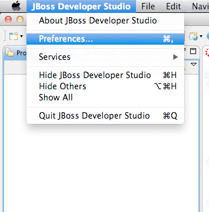
Now, locate the JBoss Tools Runtime Detection preferences:
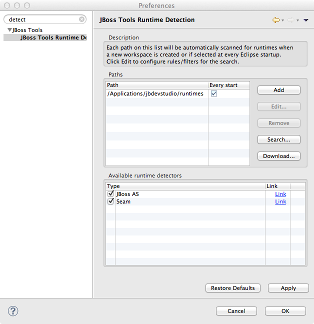
Click Add and locate where you put servers on your disk:
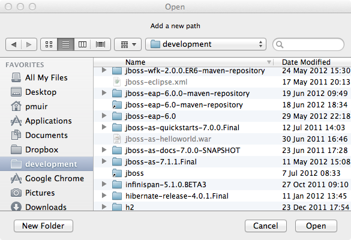
Any available servers will be located, now all you need to do is click OK, and then OK on the preferences dialog:
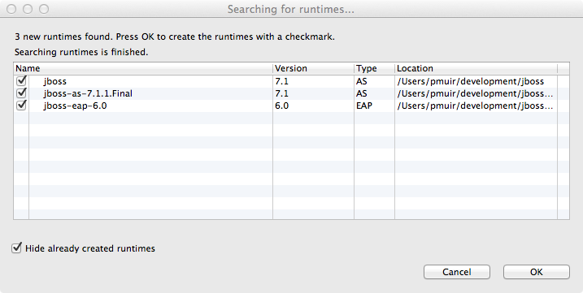
Now, let’s start the server from Eclipse. If you previously started a server from the command line, you should stop it there first.
First, we need to make sure the Server tab is on view. Open the Window → Show View → Other… dialog:
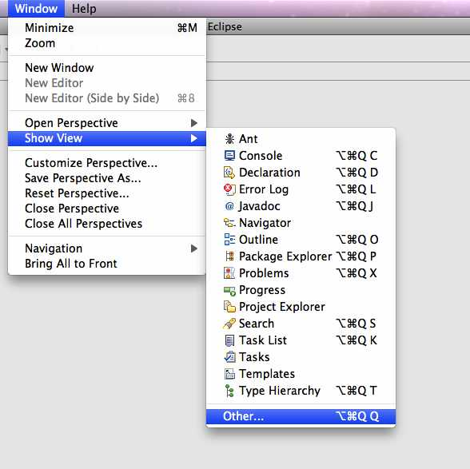
And select the Server view:
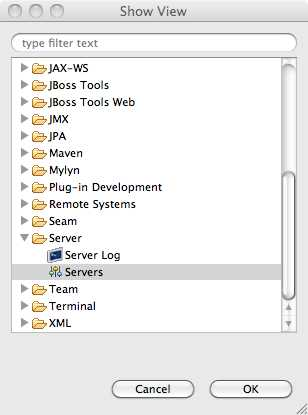
You should see the Server View appear with the detected servers:
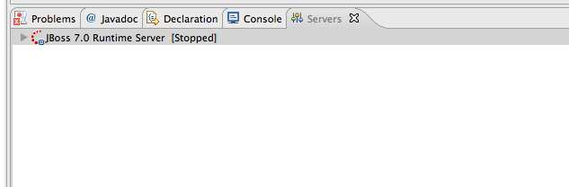
Now, we can start the server. Right click on the server in the Server view, and select Start :
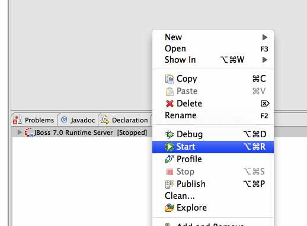
|
|
If you want to debug your application, you can simply select Debug rather than Start . This will start the server in debug mode, and automatically attach the Eclipse debugger. |
You’ll see the server output in the Console :
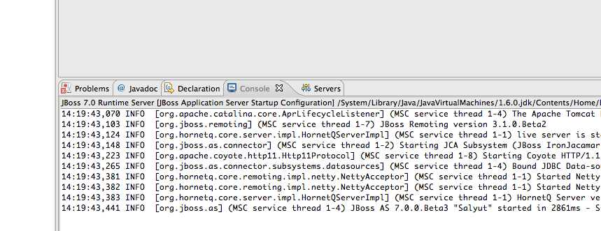
That’s it, we now have the server up and running in Eclipse!
Importing the quickstarts into Eclipse
In order to import the quickstarts into Eclipse, you will need m2eclipse installed. If you have JBoss Developer Studio, then m2eclipse is already installed.
First, choose File → Import…:
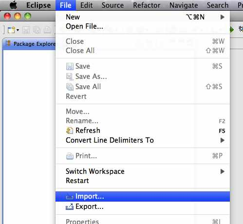
Select Existing Maven Projects:
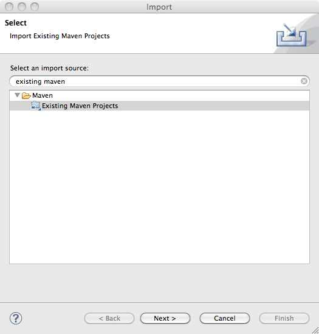
Click on Browse, and navigate to the quickstarts/ directory:
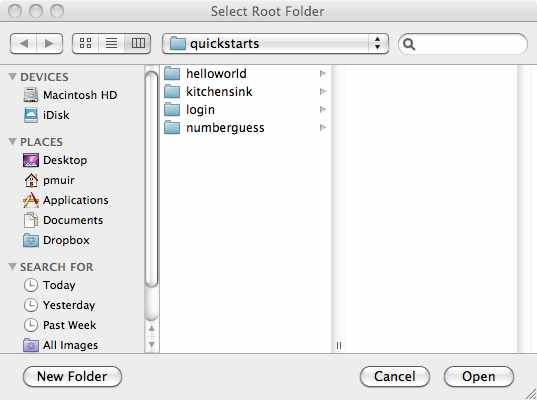
Finally, make sure all 4 quickstarts are found and selected, and click Finish:
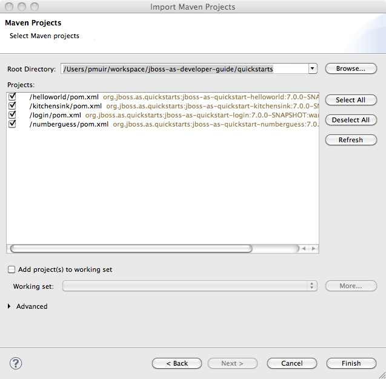
Eclipse should now successfully import 4 projects:
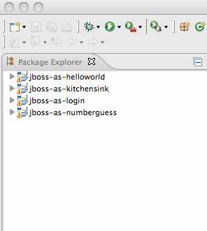
It will take a short time to import the projects, as Maven needs to download the project’s dependencies from remote repositories.
Managing JBoss Enterprise Application Platform 6
Here we will quickly outline how you can access both the command line interface and the web management interface for managing JBoss Enterprise Application Platform 6. Detailed information can be found in the Administration and Configuration Guide for JBoss Enterprise Application Platform 6.
When the server is running, the web management interface can be accessed at http://localhost:9990/console. You can use the web management interface to create datasources, manage deployments and configure the server.
JBoss Enterprise Application Platform 6 comes with a command line interface. To run it on Linux, Unix or Mac, execute:
jboss-eap-6.x.x/bin/jboss-admin.sh --connect
Or, on Windows:
jboss-eap-6.x.x/bin/jboss-admin.bat --connect
Once started, type help to discover the commands available to you.
Throughout this guide we use the jboss-as maven plugin to deploy and undeploy applications. This plugin uses the Native Java Detyped Management API to communicate with the server. The Detyped API is used by management tools to control an entire domain of servers, and exposes only a small number of types, allowing for backwards and forwards compatibility.